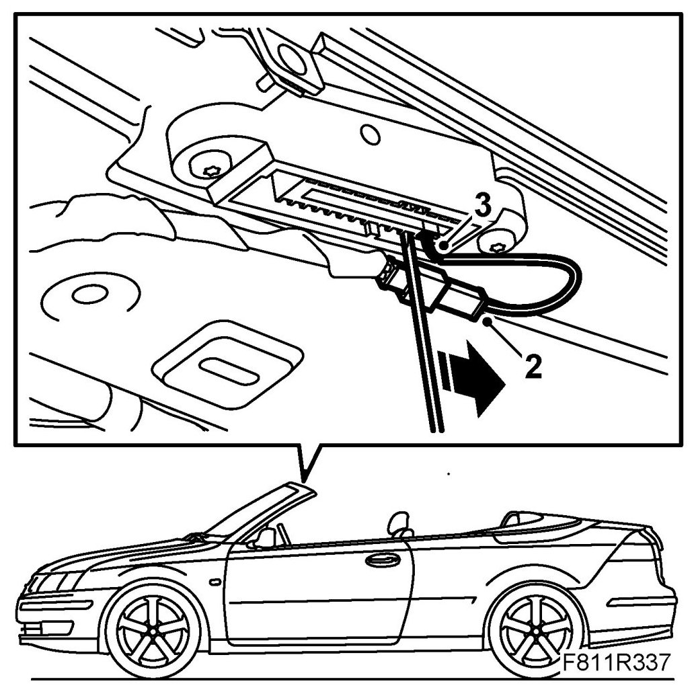
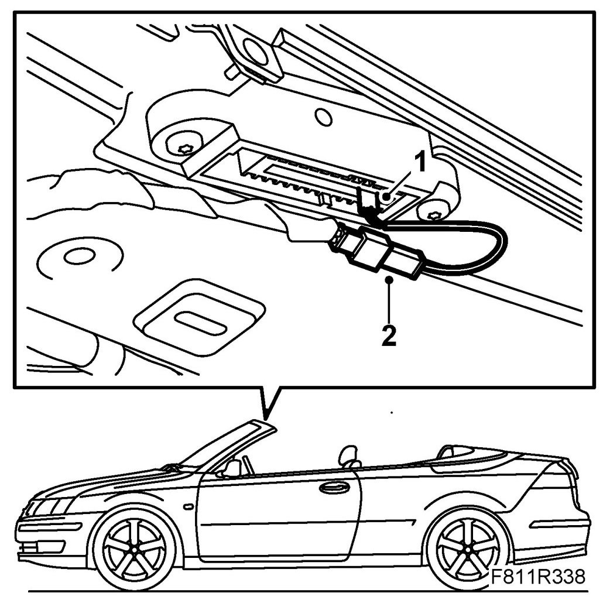

Position Sensor, First Bow Ready to Lock (561)
Position Sensor, First Bow Ready To Lock (561)
Removing
Only the latch fitting on the left-hand side of the windscreen frame has position sensors.
1. Remove Windscreen frame upper rim, CV.
2. Unplug the position sensor connector.

3. Remove the position sensor by pressing in the lock tab with a screwdriver.
Fitting
1. Fit the position sensor.

2. Plug in the position sensor connector.
3. Fit the Windscreen frame upper trim.
4. Test the operation of the soft top.
5. Connect the diagnostics tool and erase any diagnostic trouble code.